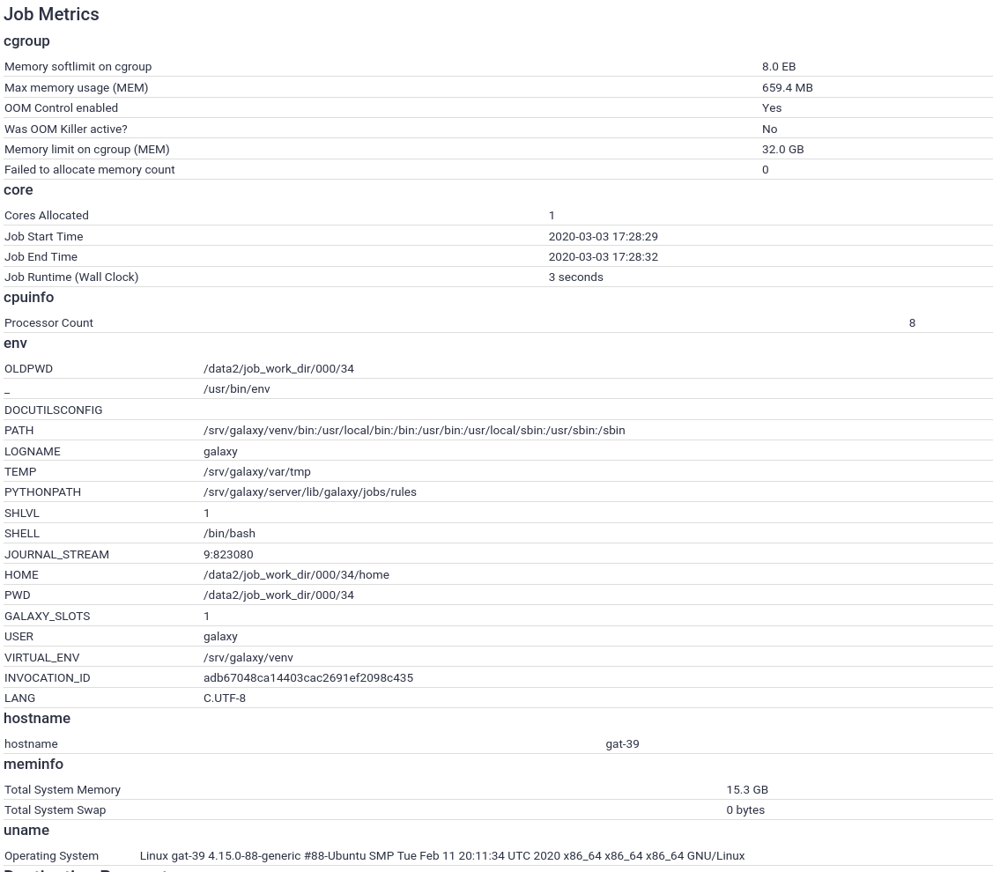

Recording Job Metrics
 Helena Rasche
Helena Rasche
Overview
question Questionsobjectives Objectives
requirements Requirements
What are job metrics?
What sort of information can I collect?
Where can I find this information?
- Galaxy Server administration
- Ansible: slides slides - tutorial hands-on
- Galaxy Installation with Ansible: slides slides - tutorial hands-on
- Connecting Galaxy to a compute cluster: slides slides - tutorial hands-on
time Time estimation: 15 minutes
Supporting Materials
last_modification Last modification: Jan 6, 2021
Overview
Job metrics record properties of the jobs that are executed, information that can help you plan for trainings or plan capacity for further expansions of your Galaxy server.
Agenda
Metrics
Galaxy includes a built-in framework to collect job metrics and store these in its database. Some work was done to try and analyse job runtime metrics to optimise cluster allocation based on job inputs, and enhance job submission (Tyryshkina et al. 2019). More work will be done in this area.
comment Note
Job metrics are only visible to Galaxy admin users, unless you set
expose_potentially_sensitive_job_metrics: true, like UseGalaxy.eu does. EU’s intention with this is to empower users and make everything as transparent as possible.
Setting up Galaxy
By default, Galaxy enables the core metrics:

These include very basic submission parameters. We want more information!
hands_on Hands-on: Setting up the job metrics file
Create the file
templates/galaxy/config/job_metrics_conf.xml.j2with the following contents:<?xml version="1.0"?> <job_metrics> <core /> <cpuinfo /> <meminfo /> <uname /> <env /> <cgroup /> <hostname /> </job_metrics>You can see the sample file for further options regarding metrics.
Edit your playbook to install the package named
cgroup-toolsin a pre-task (with git/make/etc). This package is required to usecggetwhich is used in metrics collection.Edit the group variables file,
group_vars/galaxyservers.yml:You’ll need to make two edits:
- Setting the
job_metrics_config_file, to tell Galaxy where to look for the job metrics configuration.- Adding the file to the list of
galaxy_config_templatesto deploy it to the server:--- galaxyservers.yml.old +++ galaxyservers.yml galaxy_config: galaxy: + job_metrics_config_file: "{{ galaxy_config_dir }}/job_metrics_conf.xml" brand: "My Galaxy" admin_users: admin@example.org database_connection: "postgresql:///galaxy?host=/var/run/postgresql" @@ -120,6 +121,8 @@ gie_proxy_setup_service: systemd gie_proxy_sessions_path: "{{ galaxy_mutable_data_dir }}/interactivetools_map.sqlite" galaxy_config_templates: + - src: templates/galaxy/config/job_metrics_conf.xml.j2 + dest: "{{ galaxy_config.galaxy.job_metrics_config_file }}" - src: templates/galaxy/config/tool_conf_interactive.xml dest: "{{ galaxy_config_dir }}/tool_conf_interactive.xml" - src: templates/galaxy/config/job_conf.xmlRun the playbook
ansible-playbook galaxy.yml
Generating Metrics
With this, the job metrics tracking should be set up. Now when you run a job, you will see many more metrics:
hands_on Hands-on: Generate some metrics
Run a job (any tool is fine, even upload)
View the information of the output dataset (galaxy-info)

What should I collect?
There is not a good rule we can tell you, just choose what you think is useful or will be. Numeric parameters are “cheaper” than the text parameters like uname to store, eventually you may find yourself wanting to remove old job metrics if you decide to collect the environment variables or similar.
Accessing the data
You can access the data via BioBlend (JobsClient.get_metrics), or via SQL with gxadmin
References
- Tyryshkina, A., N. Coraor, and A. Nekrutenko, 2019 Predicting runtimes of bioinformatics tools based on historical data: five years of Galaxy usage (J. Wren, Ed.). Bioinformatics 35: 3453–3460. 10.1093/bioinformatics/btz054
Feedback
Did you use this material as an instructor? Feel free to give us feedback on how it went.

Citing this Tutorial
- Helena Rasche, 2021 Recording Job Metrics (Galaxy Training Materials). /training-material/topics/admin/tutorials/job-metrics/tutorial.html Online; accessed TODAY
- Batut et al., 2018 Community-Driven Data Analysis Training for Biology Cell Systems 10.1016/j.cels.2018.05.012
details BibTeX
@misc{admin-job-metrics, author = "Helena Rasche", title = "Recording Job Metrics (Galaxy Training Materials)", year = "2021", month = "01", day = "06" url = "\url{/training-material/topics/admin/tutorials/job-metrics/tutorial.html}", note = "[Online; accessed TODAY]" } @article{Batut_2018, doi = {10.1016/j.cels.2018.05.012}, url = {https://doi.org/10.1016%2Fj.cels.2018.05.012}, year = 2018, month = {jun}, publisher = {Elsevier {BV}}, volume = {6}, number = {6}, pages = {752--758.e1}, author = {B{\'{e}}r{\'{e}}nice Batut and Saskia Hiltemann and Andrea Bagnacani and Dannon Baker and Vivek Bhardwaj and Clemens Blank and Anthony Bretaudeau and Loraine Brillet-Gu{\'{e}}guen and Martin {\v{C}}ech and John Chilton and Dave Clements and Olivia Doppelt-Azeroual and Anika Erxleben and Mallory Ann Freeberg and Simon Gladman and Youri Hoogstrate and Hans-Rudolf Hotz and Torsten Houwaart and Pratik Jagtap and Delphine Larivi{\`{e}}re and Gildas Le Corguill{\'{e}} and Thomas Manke and Fabien Mareuil and Fidel Ram{\'{\i}}rez and Devon Ryan and Florian Christoph Sigloch and Nicola Soranzo and Joachim Wolff and Pavankumar Videm and Markus Wolfien and Aisanjiang Wubuli and Dilmurat Yusuf and James Taylor and Rolf Backofen and Anton Nekrutenko and Björn Grüning}, title = {Community-Driven Data Analysis Training for Biology}, journal = {Cell Systems} }